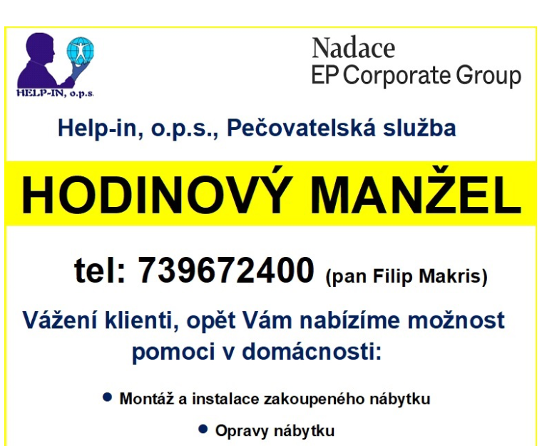
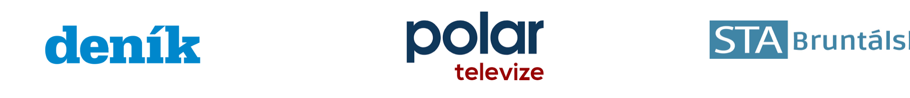
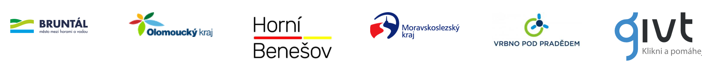

🏡
Pečovatelská služba
Pomoc doma, péče, doprovod, nákupy a podpora v běžném dni.
Pečovatelská služba, sociální poradenství, dluhová poradna a kompenzační pomůcky pro seniory, osoby se zdravotním postižením i rodiny.
Služby jasně podle barev
Každá služba má svou barvu, aby se lidé rychle zorientovali i na mobilu nebo tabletu.
Pomoc doma, péče, doprovod, nákupy a podpora v běžném dni.
Poradenství, dávky, příspěvky, úřady a hledání správného řešení.
Pomůcky pro bezpečnější pohyb, domácnost a každodenní život.
Pomoc s dluhy, exekucemi, splátkami a orientací v možnostech.
Lidský přístup
Víme, že za každým telefonátem je konkrétní člověk, rodina a často i strach. Proto komunikujeme jednoduše, klidně a s respektem.
Nejnovější informace

Projekt
Praktická pomoc v domácnosti pro klienty. Aktuální informace najdete v letáku.
O nás

Přidejte se i vy
Společně pomáháme lidem v regionu Bruntálska.

Ozvěte se nám
Časté otázky
Seniorům, osobám se zdravotním postižením, rodinám a lidem, kteří potřebují podporu v náročné životní situaci.
Nejrychlejší je zavolat na telefon +420 733 535 580 nebo napsat e-mail.
Sociální poradenství pomáhá s orientací v možnostech podpory, dávkách a komunikaci s institucemi.